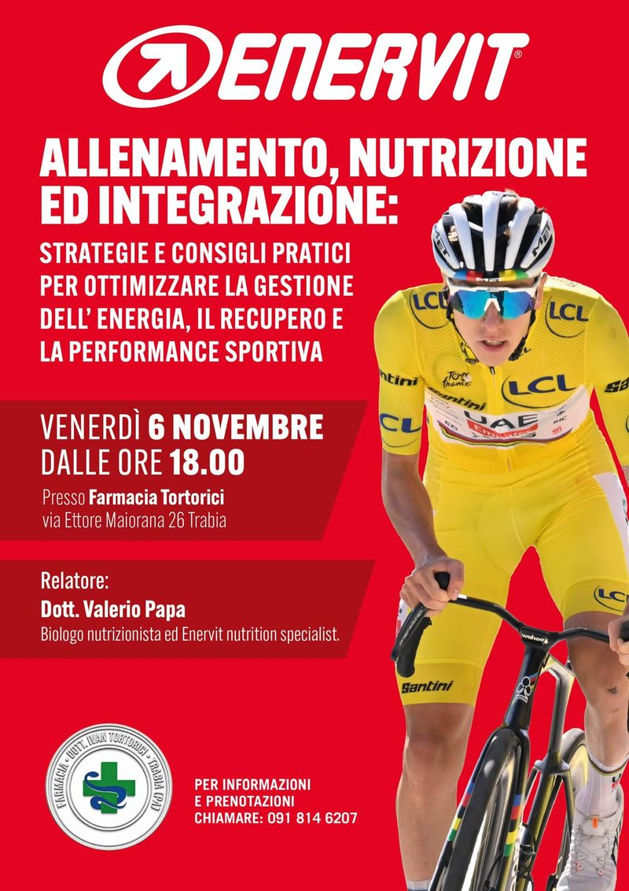
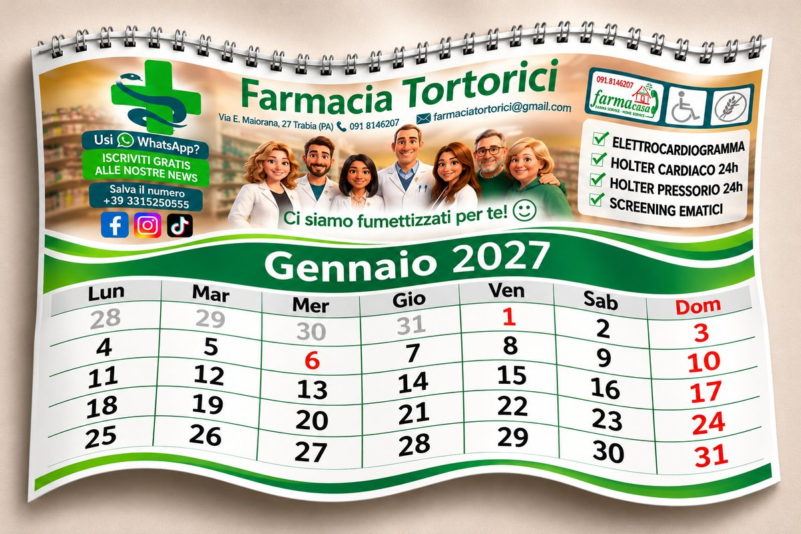

Holter cardiaco e pressorio
In convenzione con il SSN con la ricetta del medico di base, oppure anche senza ricetta, a pagamento. Prenoti in farmacia, al telefono o su WhatsApp.
Da tanti anni la Farmacia del Dott. Ivan Tortorici è un punto di riferimento per le famiglie di Trabia: consiglio professionale, servizi di prevenzione e un assortimento curato per ogni esigenza.

Sei uno sportivo? Oppure vuoi curare la tua alimentazione per iniziare a fare sport? Questo incontro è per te.
Il Dott. Valerio Papa, biologo nutrizionista ed Enervit nutrition specialist, ti darà strategie e consigli pratici per gestire al meglio l'energia, il recupero e la performance sportiva.
La partecipazione è gratuita e non prevede vendita di prodotti.
Mercoledì 11 novembre, in farmacia, puoi fare gratuitamente l'esame dell'emoglobina glicata.
L'emoglobina glicata (HbA1c) indica la media della glicemia degli ultimi 2-3 mesi: è un esame utile per la prevenzione e per tenere sotto controllo il diabete. Basta una goccia di sangue dal dito.

Ci siamo fumettizzati per te: il nostro calendario di qualità con tante utili informazioni e spazio per scrivere appunti e ricorrenze. Prenota la tua copia e ritirala in farmacia.
Crediamo in un rapporto diretto con chi entra: ascoltare, consigliare, seguire nel tempo.
Da tanti anni ampliamo i nostri servizi mantenendo la stessa idea di partenza: ogni persona ha esigenze diverse. Per questo selezioniamo con attenzione alimenti speciali, dermocosmesi, prodotti ortopedici e veterinari, e offriamo controlli e screening direttamente in farmacia.
Siamo facilmente raggiungibili, con comodo parcheggio e accesso agevole per le persone con disabilità. E se non puoi venire in farmacia, ti assistiamo a domicilio.
Oltre alla dispensazione di farmaci con e senza ricetta, offriamo servizi pensati per semplificarti la vita.
In convenzione con il SSN con la ricetta del medico di base, oppure anche senza ricetta, a pagamento. Prenoti in farmacia, al telefono o su WhatsApp.
Quadro lipidico completo, emoglobina glicata (gratuita), glicemia, PSA e vitamina D con una goccia di sangue dal dito: indolore e in pochi minuti.
Peso e misurazione impedenziometrica per la stima della massa grassa, con la lettura della saturazione di ossigeno e della pressione: tutto in un'unica misurazione.
Per controllare la crescita del tuo bambino: passa in farmacia quando vuoi per pesarlo.
Hai tra 50 e 69 anni? Ritira in farmacia, quando vuoi e senza attese, il kit gratuito per lo screening del colon-retto.
Screening per la prevenzione con specialisti in farmacia: esame per la densità ossea, screening senologico, consulenze dermocosmetiche personalizzate, consigli alimentari. Su prenotazione.
Misurazione della pressione arteriosa ed elettrocardiogramma in farmacia, rapidi e vicino a casa.
In modo indolore e in ambiente igienicamente sicuro, con materiali ipoallergenici e molto gradevoli.
Chi non può venire in farmacia non resta solo: chiamaci o scrivici su WhatsApp e ti assistiamo direttamente a casa, gratuitamente.
Alimenti speciali per intolleranze, celiachia ed esigenze particolari, disponibili o ordinabili.
Prodotti selezionati per la cura della pelle, del viso e del corpo, con il consiglio giusto per te.
Tutori e ausili ortopedici per il benessere e il recupero di ogni giorno.
Prodotti per chi fa sport, con il consiglio giusto per te.
Farmaci, alimenti e prodotti per la salute dei tuoi animali, anche su ricetta veterinaria.
Devi pagare un ticket per visita ospedaliera?Questo ed altro da noi.
Tocca un pulsante: si apre WhatsApp con il messaggio già scritto. Ti rispondiamo noi.
È gratis e non serve salvare il nostro numero: le novità della farmacia ti arrivano direttamente su WhatsApp, come su una bacheca sempre a portata di mano.
Di cosa parla
Si apre WhatsApp: tocca «Segui».
Cos'è un canale WhatsApp?
Gli ultimi post della nostra pagina, aggiornati in automatico.
persone ci seguono su FacebookLe ultime notizie da Quotidiano Sanità e Farmacista33, scelte per te e aggiornate in automatico.
Fonti: Quotidiano Sanità e Farmacista33. Gli articoli si aprono sul sito della testata.
Gli ultimi articoli de La Zampa su salute, cura e benessere di cani, gatti e altri animali da compagnia, scelti per te e aggiornati in automatico.
Veterinaria in farmacia: farmaci, alimenti e prodotti per la salute dei tuoi animali, anche su ricetta veterinaria.
Chiedi su WhatsAppFonte: La Zampa – La Stampa. Gli articoli si aprono sul sito della testata.
Salute, prevenzione, invecchiamento attivo e sostegno a chi si prende cura di una persona anziana: gli ultimi articoli di associazioni nazionali, scelti per te e aggiornati in automatico.
In farmacia per te: assistenza a domicilio gratuita, misurazione della pressione, ECG e Holter.
Chiedi su WhatsAppFonti: Auser, Federazione Alzheimer Italia e Senior Italia. Gli articoli si aprono sui siti delle associazioni.
Allenamento, alimentazione, idratazione, prevenzione degli infortuni e recupero: gli ultimi articoli di riviste sportive, scelti per te e aggiornati in automatico.
In farmacia per chi fa sport: consigli su integratori e idratazione, prodotti per dolori muscolari e piccoli traumi, misurazione della pressione ed ECG.
Chiedi su WhatsAppLe ultime recensioni lasciate sul nostro sito e su Google.
Con la ricetta del medico di base è in convenzione con il Servizio Sanitario Nazionale; si può fare anche senza ricetta, a pagamento. Prenoti chiamando lo 091 814 6207 o scrivendo su WhatsApp al 331 525 0555.
Sì: in farmacia facciamo l'elettrocardiogramma e la misurazione della pressione. Chiamaci per sapere i tempi.
No, è gratuita. Chiamaci o scrivici su WhatsApp al 331 525 0555 e ti assistiamo direttamente a casa.
No, puoi passare quando vuoi. Con una goccia di sangue dal dito facciamo anche emoglobina glicata, glicemia, PSA e vitamina D.
Chi ha tra 50 e 69 anni può ritirarlo gratuitamente in farmacia, quando vuole e senza attese.
Sì: la domenica dalle 9.00 alle 13.00. Dal lunedì al venerdì 8.30–13.00 e 16.15–19.45, il sabato 8.30–13.00 e 16.15–19.30.
Alla farmacia di turno, con servizio a chiamata solo per farmaci urgenti. Il calendario dei turni è esposto sulle bacheche di tutte le farmacie.
Vedi le farmacie di turno sul sito ufficiale dell'Ordine dei Farmacisti di Palermo →
Ci trovi in Via Ettore Maiorana 27, facilmente raggiungibili e con comodo parcheggio.
Orari e come arrivareVia Ettore Maiorana 27. Parcheggio facile e accesso per persone con disabilità.
Di notte e nei festivi il servizio a chiamata, solo per farmaci urgenti, è garantito a rotazione dalle farmacie della zona. Il calendario dei turni è esposto sulle bacheche di tutte le farmacie.